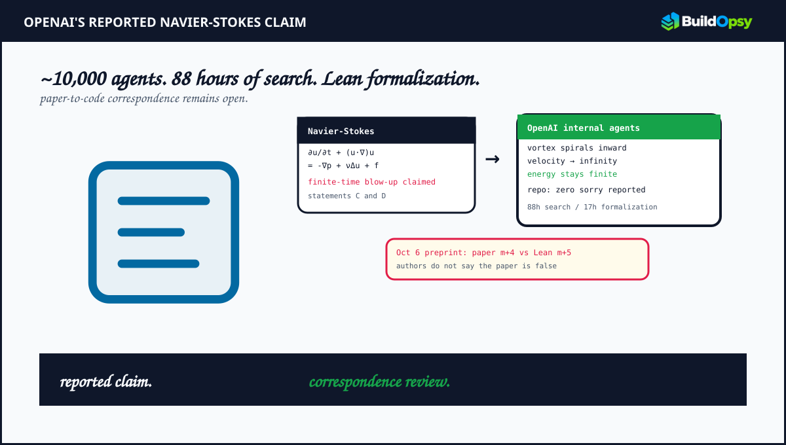

1. OpenAI's Published Claim
OpenAI's September 8 announcement says an internal system produced a finite-time blow-up result for the forced three-dimensional incompressible Navier–Stokes equations. It says the construction begins with a fluid at rest, applies a smooth external force, keeps finite total energy and produces unbounded velocity in finite time. OpenAI maps the result to statements C and D in the Clay problem description.
The announcement reports about 10,000 concurrent agents, roughly 88 hours of search, 17 additional hours for Lean formalization and verification, and approximately 130 billion output tokens for the Navier–Stokes effort. These are OpenAI-reported process figures. OpenAI says the model that produced the proof was “significantly more capable than GPT-6 Astra”; the 17-hour Lean formalization and verification step ran via GPT-6 Astra. OpenAI also writes, “We do not intend to claim the Millennium Prize for this result.”
The question examined here is narrower than whether the proof is correct: does the public Lean formalization faithfully match the paper's mathematical statements? A later preprint reports two specific mismatches and explicitly declines to judge the natural-language proof.
2. The Claimed Equation and Solution
A schematic forced incompressible Navier–Stokes system is:
∂u/∂t + (u · ∇)u = -∇p + νΔu + f
∇ · u = 0Here u is velocity, p is pressure, ν is viscosity and f is the applied force. OpenAI describes a smooth force and an initially resting fluid; it claims velocity becomes unbounded at finite time while energy remains finite. This is a summary of the company's claim, not an independent verification of the construction.
3. What the Lean Repository Reports
Lean checks a proof term against the proposition encoded in its environment. It does not compare that proposition or proof with a natural-language paper. At repository commit f9e8bc5, the formalization manifest reports zero sorry uses for the project and its listed main results, names propext, Classical.choice and Quot.sound as their axioms, and marks review status as self-assessed.
The pinned README specifies Lean 4.34.0-rc2 and documents Lake build and Comparator instructions. Those files disclose a reproducible environment and project-reported status; they are not an independent correspondence review. Buildopsy did not run the build or Comparator.
4. Two Paper-to-Lean Differences Reported in the Preprint
Bastounis, Circelli and Hansen's arXiv v1 preprint compares OpenAI's natural-language paper with Lean declarations cited by the paper at commit f9e8bc5. In §3.1, the authors report that the paper's equation (8.19) uses an m+4 derivative bound, while the cited Lean estimate requires m+5. They call the Lean estimate weaker than the one stated in the paper.
| Comparison in the preprint | Paper | Cited Lean estimate | Narrow implication |
|---|---|---|---|
| Lemma 8.6, equation (8.19), paper p. 95; preprint §3.1 | Cym+4 input-derivative bound | Cym+5 bound in the cited Lean estimate | The preprint authors report the Lean estimate is weaker by one input derivative. |
| Equation (10.19), paper p. 123; preprint §3.2 | Pressure-flux bound stated in terms of BR | Comparable Lean estimate also depends on AR | The preprint authors say the bounds are difficult to compare. |
The preprint authors explicitly do not assess whether OpenAI's natural-language proof is correct. Their findings concern correspondence between selected paper estimates and the cited Lean declarations; they do not show that the theorem is false or determine how the differences affect the full proof.
5. What Is Established and What Remains Open
OpenAI reports a finite-time blow-up result for the forced Navier–Stokes statements C and D, a public paper and a Lean repository. Its repository describes the formalized results and supplies build instructions. A separate October 6 preprint reports mismatches in cited estimates between the paper and Lean code.
Those sources establish what OpenAI claims, what its repository contains and what the preprint authors report about the correspondence between them. They do not settle whether the natural-language proof is mathematically correct, whether the mismatches change the final theorem, or whether the result will be accepted by the mathematical community. OpenAI says it does not intend to claim the Millennium Prize.
6. What an Independent Review Must Check
Reviewers need to compare the written theorem and each key estimate with the exact formal declaration, not merely confirm that a build succeeds. The October 6 preprint identifies two concrete places to begin: Lemma 8.6's derivative count and equation (10.19)'s pressure-flux bound. A response should state whether those differences are intentional, how the proof uses each estimate, and whether the paper or formalization needs revision.
A reproducible Lean build and an independent mathematical reading answer different questions. The first checks the encoded proof under its pinned toolchain. The second checks that the encoded statements and arguments correspond to the intended Navier–Stokes result.
The Verdict
OpenAI has published a finite-time blow-up claim, a Lean formalization and instructions for reproducing its formal build. The repository manifest reports zero sorry uses and self-assessed review status. The October 6 preprint reports two paper-to-Lean estimate differences but does not decide whether the written proof is correct. That correspondence, and the effect of the reported differences on the full argument, remain unresolved in the sources examined here.
The formal artifact is public. Its correspondence to the paper still needs mathematical review.
Frequently Asked Questions
Did OpenAI solve the Navier-Stokes problem? OpenAI claims a finite-time blow-up result and says it has a Lean formalization. An October 6 preprint reports mismatches between the paper and cited Lean estimates, but does not conclude that the paper is false. OpenAI says it does not intend to claim the Millennium Prize.
Did Astra solve Navier–Stokes? No. OpenAI did not credit Astra with producing the analytical proof. Its September 8 announcement attributes the proof to an internal model it described as “significantly more capable than GPT-6 Astra,” and reports that Astra was used for the subsequent Lean formalization and verification.
Where is the Navier-Stokes proof code? OpenAI published the Lean formalization on GitHub under the openai organization in the navierstokesandeuler repository. The code plus the paper are the primary sources for every claim in this audit.
What did Lean actually verify? Lean checks that proof terms establish the propositions encoded in the formal environment. It does not determine whether a natural-language paper was faithfully translated into those propositions.
Did the October 6 preprint prove OpenAI's paper false? No. Its authors say they do not make a claim about the correctness of the natural-language proof. They report mismatches between the paper and cited Lean estimates.
Has the Clay Mathematics Institute accepted the proof? OpenAI says it does not intend to claim the Millennium Prize. The sources linked here do not report a Clay decision.
Sources and Method
Related file on this site: GPT-6 Astra: Critical Cyber Capability, External Test Limits. OpenAI's September 8 announcement and the repository at commit f9e8bc5 document the company's claim and formal files. The October 6 arXiv v1 preprint by Alexander Bastounis, Fabian Circelli and Anders C. Hansen (King's College London and University of Cambridge, as listed in the preprint) compares specified paper estimates with cited Lean declarations in §§3.1–3.2. The authors explicitly limit their conclusion to the mismatches; they do not assess whether the natural-language proof is correct.
- OpenAI: On the Navier-Stokes Millennium Prize Problem
- OpenAI: NavierStokesAndEuler repository at commit f9e8bc5
- OpenAI manifest at commit f9e8bc5: reported sorry counts, axioms and self-assessed review status
- OpenAI README at commit f9e8bc5: Lean toolchain, build and Comparator instructions
- Clay Mathematics Institute: Navier-Stokes Equation
- Bastounis, Circelli and Hansen: Navier–Stokes lost in translation, arXiv v1 (October 6, 2026), §§3.1–3.2